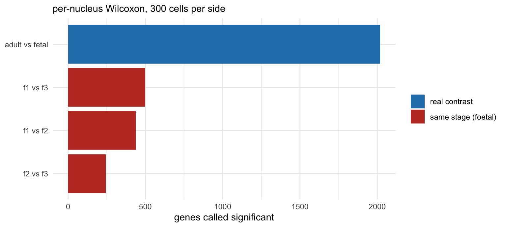

| cluster | n | published | agreement |
|---|---|---|---|
| 0 | 1775 | Cardiomyocytes | 100% |
| 1 | 867 | Fibroblast | 99% |
| 2 | 761 | Cardiomyocytes | 99% |
| 3 | 506 | Epicardial cells | 86% |
| 4 | 503 | Fibroblast | 88% |
| 5 | 415 | Endothelial cells | 98% |
| 6 | 346 | Immune cells | 99% |
| 7 | 322 | Cardiomyocytes | 91% |
| 8 | 266 | Cardiomyocytes | 99% |
| 9 | 223 | Cardiomyocytes | 87% |
Single-cell RNA-seq
From clusters to conclusions · BINF90004 Bioinformatics Case Studies
Dr Jiadong Mao · Melbourne Integrative Genomics
2026-08-05
Where we are
You have 19 clusters. Clusters are numbered blobs.
Today’s second half: give them names, then use those names to make two biological claims.
- Which cell types change in abundance as the heart matures?
- Which genes change within a cell type?
The second is where most published single-cell analyses go wrong.
Part 1
Annotation
Three ways to name a cluster
Manual, marker-based — find genes enriched in the cluster, look them up. Flexible, slow, needs domain knowledge.
Reference-based — map onto an annotated atlas (Azimuth, SingleR, CellTypist). Fast, reproducible, fails on cell types absent from the reference.
Soft / continuous — score every cell against every reference phenotype instead of assigning one label.
Why hard labels are uncomfortable
A cell is not obliged to belong to a category we invented.
- Differentiating cells are genuinely between states
- Doublets are genuinely two things
- Novel cell types are genuinely not in your reference
Φ-Space (our lab) replaces the label with a vector of scores — one per reference phenotype. Cells that sit between types look like they sit between types.
The trap
Two failures at once
Too fine. 19 clusters, and 11 of them are cardiomyocytes.
Too coarse. The published analysis has 8 cell types. You recover 6. Smooth muscle (62 nuclei) and erythroid (9) get no cluster at all — 60 of the 62 smooth muscle nuclei are hidden inside cluster 3.
Nothing in the output flagged either one. Every one of those 11 cardiomyocyte clusters has perfectly good marker genes.
Rare populations
Two independent ways to lose them, both of which you have now seen:
- QC thresholds — endothelial and immune cells were hit hardest by
percent.mt < 5 - Clustering — smooth muscle never formed a cluster of its own
Both failures point the same direction. If your question is about a rare cell type, every default in the pipeline is working against you.
Part 2
Composition
Do proportions change?

The wrong way
A chi-square test on cell counts.
With ~7,000 nuclei, almost everything is significant.
Your independent units are the nine donors, not the nuclei. Nuclei from one donor are subsamples of a single biological observation.
propeller
| PropMean.fetal | PropMean.young | PropMean.adult | FDR | |
|---|---|---|---|---|
| Cardiomyocytes | 0.7423 | 0.4034 | 0.2363 | 0.0000 |
| Immune cells | 0.0264 | 0.0912 | 0.1741 | 0.0004 |
| Epicardial cells | 0.0397 | 0.1028 | 0.1315 | 0.0276 |
| Endothelial cells | 0.0479 | 0.0993 | 0.1361 | 0.0276 |
| Fibroblast | 0.1292 | 0.2806 | 0.3088 | 0.0276 |
| Neurons | 0.0145 | 0.0227 | 0.0132 | 0.4943 |
Computes each donor’s proportions, transforms them, tests across donors.
What it says
Cardiomyocytes fall from ~74% of nuclei in foetal hearts to ~24% in adult. Immune cells and fibroblasts rise.
Two things before you believe it:
- These are nuclear proportions. Adult cardiomyocytes are binucleated and polyploid — part of this is the denominator changing, not the tissue.
- Compositions sum to 1. If cardiomyocytes fall, everything else rises whether or not anything happened to it.
Part 3
Differential expression
The question
Within cardiomyocytes: which genes differ between adult and foetal hearts?
Every tutorial reaches for FindMarkers(). On this data it returns ~2,000 significant genes.
That number is wrong, and the reason is the most important thing in this lecture.
Pseudoreplication
FindMarkers treats every nucleus as an independent replicate.
They are not. Nuclei from one donor share:
- that donor’s genome
- their age, sex, medication, disease history
- one tissue dissociation, one library prep, one sequencing run
Effective sample size is 3 donors per group, not 3,200 nuclei.
A control that should find nothing
Take two donors at the same developmental stage. There is no developmental difference to find.

Read that again
Two foetal donors — same stage, same tissue, same protocol — produce hundreds of “significantly differentially expressed” genes.
There is no biology in that comparison. Those genes are donor variation reported to you as a finding.
The noise floor is ~25% of the “real” adult-vs-foetal result.
What that means
When the per-nucleus test says 2,000 genes separate adult from foetal cardiomyocytes, it cannot distinguish:
“adult hearts differ from foetal hearts”
from
“these three donors differ from those three donors”
It never modelled donor. It has no way to tell them apart.
Pseudobulk
Sum counts within each donor × cell type. One profile per donor.
Then use methods built for a handful of replicates — which is what bulk RNA-seq methods are. edgeR, limma-voom, DESeq2.
Nine columns instead of seven thousand. That was always the real sample size.
And the control?
Run the same two-foetal-donor comparison through pseudobulk:
It refuses. One sample per group — there is no residual variance to estimate.
That refusal is the correct answer. The per-nucleus test does not refuse. It manufactures thousands of degrees of freedom from one donor and hands you a gene list.
What you can honestly conclude
- n = 3 per group. Small.
- Sex is confounded with stage (2M/1F, 2M/1F, 1M/2F)
- Donors differ in depth and quality —
a3loses far more nuclei to any QC threshold thanf1 - Cell type labels are an interpretation, not a measurement
- Pseudobulk discards within-type heterogeneity by construction
Your report needs a section like this. It is not a weakness to admit them — it is the difference between a result and a claim.
Part 4
Where the field is going
Beyond discrete labels
Trajectory / pseudotime — order cells along a continuous process rather than binning them. Slingshot, Monocle3, DPT, RNA velocity.
Cell–cell interaction — infer signalling between cell types from ligand–receptor expression. CellPhoneDB, CellChat.
Cell-specific networks — a co-expression network per cell rather than per cluster.
Spatial transcriptomics
scRNA-seq tells you which cells are doing what.
Spatial tells you where they are doing it.
- Sequencing-based: Visium, Visium HD, Slide-seq
- Imaging-based: Xenium, CosMx, MERFISH
Tumour microenvironment, tissue architecture, niches — questions dissociation destroys.
What is a cell, spatially?
Resolutions: super-cellular, near-cellular, sub-cellular
The common problem: mixed cell identities
- imperfect segmentation
- arbitrary binning
- transcript diffusion and misassignment
The same “hard labels are uncomfortable” problem, in a new place.
Foundation models
scGPT, Geneformer, scFoundation, UCE — transformers pre-trained on tens of millions of cells.
Promise: transfer to new tissues, few-shot annotation, in-silico perturbation.
Open question: do they beat well-tuned simple baselines? For several tasks the honest answer is still “not clearly”.
A good report topic, and a good place to practise the scepticism from this morning.
The five decisions
What you chose, and what a default would have chosen
| Default | You | |
|---|---|---|
| QC thresholds | percent.mt < 5 |
? |
| Number of PCs | 10 | ? |
| Clustering resolution | 0.8 | ? |
| Cluster identity | whatever the markers suggest | ? |
| DE method | per-nucleus Wilcoxon | ? |
Every one of these ran without an error message either way.
What the agent did, scored
| Step | Its choice | OK here? | Said so? |
|---|---|---|---|
| Assay | inferred snRNA-seq from MT + ribo | ✅ | ✅ |
| QC | ≥500 genes, ≥1000 UMI, MT <10% | ✅ | ✅ |
| Per-donor loss | flagged y3, a3 |
✅ | ✅ |
| Integration | Harmony + explicit batch-vs-biology test | ✅ | ✅ |
| Clustering | Leiden, res 0.6 | ✅ | ✅ |
| Annotation | 11 canonical categories | ✅ | ✅ |
| Composition test | none | ❌ | ❌ |
| DE | per-cell Wilcoxon → 5,967 | ❌ | ⚠️ last |
Same data, two analyses
| Claude Science | You | |
|---|---|---|
| Cells after QC | 7,409 | 6,982 |
| CM foetal → adult | 64.4% → 23.3% | 74% → 24% |
| Composition test | none | propeller, 5/6 significant |
| CM adult vs foetal | 5,967 (per-cell) | 2,019 per-cell → 1,569 pseudobulk |
The data agree. The disagreement is entirely about inference — and that is the part you were trained for.
Back to this morning
The part of the job that is hardest to automate is not having an idea.
It is having an idea that isn’t the same idea everyone else’s model just had — and being able to tell whether the answer on the screen is real.
Your report
TODO — dataset options and brief.